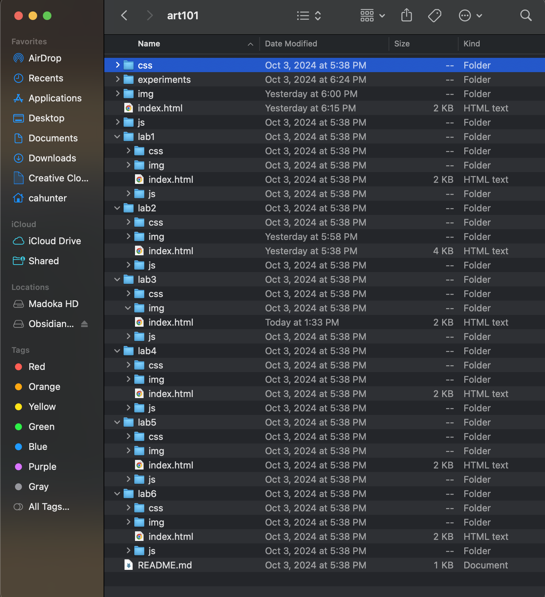

Lab 3 - File Structure and File Transfer
Challenge
We must collaborate with a teammate to create a file structure and showcase it on our website! yipee!!
Challenges
Once again, I'd honestly say that the biggest problems we had were from unnecessary additions, like the first lab we decided that from now on each page we create would be part of the overarching theme of Madoka magica. with all that in mind, this time we'd be focussing on a lot of CSS, which I would not say we've completely gotten the hang of it, but since Lab 2 we've learnt some new tricks, hehe. biggest challenge that I'd say that we ran into was color scheme and animation of the links when hovered over, although W3schools proves pretty helpful when it comes to issues like that one.
Reflection
The first assignment was 100x harder, but that was likely because it was 1. our first time working together, 2. a super mega learning process(Carly has never even tried to build a website before..)and 3. CSS is pretty easy once you get a basic understanding of the going ons.
Results
Here's the BEAUTIFUL results!
